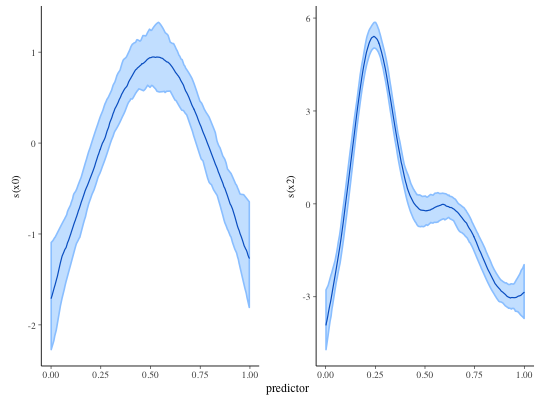

Bayesian generalized linear additive models with group-specific terms via Stan
Bayesian inference for GAMMs with flexible priors.
stan_gamm4(formula, random = NULL, family = gaussian(), data, weights = NULL, subset = NULL, na.action, knots = NULL, drop.unused.levels = TRUE, ..., prior = normal(), prior_intercept = normal(), prior_aux = cauchy(0, 5), prior_covariance = decov(), prior_PD = FALSE, algorithm = c("sampling", "meanfield", "fullrank"), adapt_delta = NULL, QR = FALSE, sparse = FALSE) plot_nonlinear(x, smooths, ..., prob = 0.9, facet_args = list(), alpha = 1, size = 0.75)
Arguments
| formula, random, family, data, knots, drop.unused.levels | Same as for
|
||||||||||
|---|---|---|---|---|---|---|---|---|---|---|---|
| subset, weights, na.action | Same as |
||||||||||
| ... | Further arguments passed to |
||||||||||
| prior | The prior distribution for the regression coefficients.
See the priors help page for details on the families and
how to specify the arguments for all of the functions in the table above.
To omit a prior ---i.e., to use a flat (improper) uniform prior---
|
||||||||||
| prior_intercept | The prior distribution for the intercept.
|
||||||||||
| prior_aux | The prior distribution for the "auxiliary" parameter (if
applicable). The "auxiliary" parameter refers to a different parameter
depending on the |
||||||||||
| prior_covariance | Cannot be |
||||||||||
| prior_PD | A logical scalar (defaulting to |
||||||||||
| algorithm | A string (possibly abbreviated) indicating the
estimation approach to use. Can be |
||||||||||
| adapt_delta | Only relevant if |
||||||||||
| QR | A logical scalar defaulting to |
||||||||||
| sparse | A logical scalar (defaulting to |
||||||||||
| x | An object produced by |
||||||||||
| smooths | An optional character vector specifying a subset of the smooth
functions specified in the call to |
||||||||||
| prob | For univarite smooths, a scalar between 0 and 1 governing the width of the uncertainty interval. |
||||||||||
| facet_args | An optional named list of arguments passed to
|
||||||||||
| alpha, size | For univariate smooths, passed to
|
Value
A stanreg object is returned
for stan_gamm4.
plot_nonlinear returns a ggplot object.
Details
The stan_gamm4 function is similar in syntax to
gamm4 in the gamm4 package, which accepts a syntax
that is similar to (but not quite as extensive as) that for
gamm in the mgcv package and converts
it internally into the syntax accepted by glmer in the
lme4 package. But rather than performing (restricted) maximum likelihood
estimation, the stan_gamm4 function utilizes MCMC to perform Bayesian
estimation. The Bayesian model adds priors on the common regression
coefficients (in the same way as stan_glm) and priors on the
terms of a decomposition of the covariance matrices of the group-specific
parameters, including the smooths. Estimating these models via MCMC avoids
the optimization issues that often crop up with GAMMs and provides better
estimates for the uncertainty in the parameter estimates.
See gamm4 for more information about the model
specicification and priors for more information about the
priors. If random = NULL, the output is a subset of that produced by
gam in the sense that there are several estimated components
for each smooth term. However, the parameterization used to estimate the model
is different and corresponds to the parameterization in
gamm4 where is smooth term is decomposed into a linear
and a non-linear part. If prior is not NULL, then the number
of parameters to place priors on is equal to the number of linear terms in
the formula. The prior on the non-linear part of each smooth term is
handled by the decov function. If random is not NULL,
then there are additional group-specific terms whose priors are also handled
by the decov function and whose posterior medians can be extracted
by calling ranef.
The plot_nonlinear function creates a ggplot object with one facet for
each smooth function specified in the call to stan_gamm4 in the case
where all smooths are univariate. A subset of the smooth functions can be
specified using the smooths argument, which is necessary to plot a
bivariate smooth or to exclude the bivariate smooth and plot the univariate
ones. In the bivariate case, a plot is produced using
geom_contour. In the univariate case, the resulting
plot is conceptually similar to plot.gam except the
outer lines here demark the edges of posterior uncertainty intervals
(credible intervals) rather than confidence intervals and the inner line
is the posterior median of the function rather than the function implied
by a point estimate. To change the colors used in the plot see
color_scheme_set.
References
Crainiceanu, C., Ruppert D., and Wand, M. (2005). Bayesian analysis for penalized spline regression using WinBUGS. Journal of Statistical Software. 14(14), 1--22. https://www.jstatsoft.org/article/view/v014i14
See also
stanreg-methods and
gamm4.
Examples
# from example(gamm4, package = "gamm4"), prefixing gamm4() call with stan_ dat <- mgcv::gamSim(1, n = 400, scale = 2) ## simulate 4 term additive truth#> Gu & Wahba 4 term additive model## Now add 20 level random effect `fac'... dat$fac <- fac <- as.factor(sample(1:20, 400, replace = TRUE)) dat$y <- dat$y + model.matrix(~ fac - 1) %*% rnorm(20) * .5 br <- stan_gamm4(y ~ s(x0) + x1 + s(x2), data = dat, random = ~ (1 | fac), QR = TRUE, chains = 1, iter = 200) # for example speed#> #> SAMPLING FOR MODEL 'continuous' NOW (CHAIN 1). #> WARNING: The initial buffer, adaptation window, and terminal buffer #> overflow the total number of warmup iterations. #> Defaulting to a 15%/75%/10% partition, #> init_buffer = 15 #> adapt_window = 75 #> term_buffer = 10 #> #> #> Chain 1, Iteration: 1 / 200 [ 0%] (Warmup) #> Chain 1, Iteration: 20 / 200 [ 10%] (Warmup) #> Chain 1, Iteration: 40 / 200 [ 20%] (Warmup) #> Chain 1, Iteration: 60 / 200 [ 30%] (Warmup) #> Chain 1, Iteration: 80 / 200 [ 40%] (Warmup) #> Chain 1, Iteration: 100 / 200 [ 50%] (Warmup) #> Chain 1, Iteration: 101 / 200 [ 50%] (Sampling) #> Chain 1, Iteration: 120 / 200 [ 60%] (Sampling) #> Chain 1, Iteration: 140 / 200 [ 70%] (Sampling) #> Chain 1, Iteration: 160 / 200 [ 80%] (Sampling) #> Chain 1, Iteration: 180 / 200 [ 90%] (Sampling) #> Chain 1, Iteration: 200 / 200 [100%] (Sampling) #> Elapsed Time: 14.061 seconds (Warm-up) #> 13.5427 seconds (Sampling) #> 27.6037 seconds (Total) #>print(br)#> stan_gamm4 #> family: gaussian [identity] #> formula: y ~ s(x0) + x1 + s(x2) #> num. obs: 400 #> ------ #> #> Estimates: #> Median MAD_SD #> (Intercept) 5.0 0.2 #> x1 5.8 0.3 #> s(x0).1 -0.2 0.5 #> s(x0).2 0.3 1.0 #> s(x0).3 -0.1 0.3 #> s(x0).4 -0.6 0.6 #> s(x0).5 -0.2 0.2 #> s(x0).6 0.6 0.6 #> s(x0).7 -0.1 0.2 #> s(x0).8 2.7 1.4 #> s(x0).9 0.2 0.6 #> s(x2).1 6.8 1.2 #> s(x2).2 7.4 2.7 #> s(x2).3 4.2 0.9 #> s(x2).4 1.0 1.8 #> s(x2).5 -1.4 1.0 #> s(x2).6 0.0 1.7 #> s(x2).7 -0.1 0.7 #> s(x2).8 7.6 4.2 #> s(x2).9 5.3 2.1 #> sigma 2.1 0.1 #> #> Error terms: #> Groups Name Std.Dev. #> fac (Intercept) 0.32 #> Xr.0 s(x2) 16.04 #> Xr s(x0) 2.84 #> Residual 2.12 #> Num. levels: fac 20, Xr.0 8, Xr 8 #> #> Sample avg. posterior predictive #> distribution of y (X = xbar): #> Median MAD_SD #> mean_PPD 7.9 0.2 #> #> ------ #> For info on the priors used see help('prior_summary.stanreg').plot_nonlinear(br)plot_nonlinear(br, smooths = "s(x0)", alpha = 2/3)